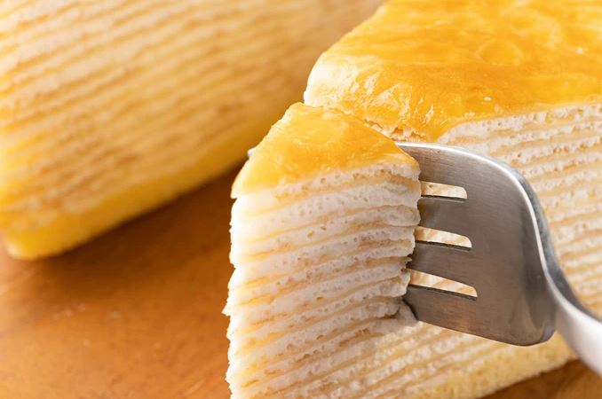
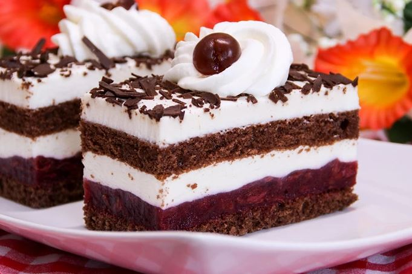

Простые рецепты домашних тортов
Торт «Наполеон» в домашних условиях
Популярное блюдо, полюбившееся многим. Это классический десерт,
состоящий из нескольких слоев и легкого крема.
Необходимые ингредиенты для теста:
| Продукты |
Кол-во |
| Пшеничная мука |
500 г. |
| Маргарин |
Пачка |
| Яйцо |
2 шт. |
| Соль |
5 г. |
| Уксус |
7 мл. |
| Растительное масло |
1 ч.л. |
| Вода |
Пол чашки |
Необходимые ингредиенты для крема:
| Продукты |
Кол-во |
| Маргарин |
300 г. |
| Сахар |
250 г. |
| Яйцо |
2 шт. |
| Крахмал |
10 г. |
| Молоко |
350 мл. |
| Грецкие орехи |
По желанию |
Процесс приготовления:
- Замес теста. Разбейте яйца в миску, туда же добавьте соль, уксус, муку, масло и тщательно смешайте ингредиенты.
- В полученную смесь тонкой струей добавьте воду. При помощи миксера смешивайте основу, пока не образуется мягкий
и эластичный ком теста. Заверните его в пленку и положите в холодильник на полчаса.
- Разделите его на 10 равных частей. Каждую часть раскатайте в тонкий лист. Полученный лист положите на противень,
заранее смазанный растительным маслом, и выпекайте при температуре 180 °С 12 минут. Повторите эту процедуру со
всеми коржами.
- Яичный белок пока отложите в сторону, а желток взбейте с сахаром до получения густой массы.
- Положите крахмал в небольшую посуду, добавьте немного молока, согласно рецепту, и аккуратно замесите.
Добавьте смесь к желткам и снова перемешиваем.
- Налейте оставшееся молоко в кастрюлю и доведите до кипения. Постоянно помешивая, доведите массу до загустения.
- Охладите крем и взбейте сливочное масло до густой консистенции. Добавьте приготовленную кремовую массу, перемешайте.
- На большое блюдо выложите корж, на него нанесите толстый слой начинки и слегка прижмите. Повторите со всеми
выпеченными коржами.
Домашний "Медовик"

Это классический и популярный торт, который с легкостью можно приготовить дома.
Вкусный десерт с медовым вкусом и прослойками из воздушного мусса.
Необходимые ингредиенты:
- 500 г. муки;
- 4 яйца;
- 250 г. сахара;
- 25 г. меда;
- 200 г. сметаны;
- 150 мл. сгущенного молока;
- 80 г. сливочного масла;
- 5 г. разрыхлителя;
- сода на кончике ножа;
- уксус для гашения;
- ванильный экстракт.
Процесс приготовления:
- Коржи. Взбейте желток и белок до белой массы. Добавьте мед, сметану и тщательно перемешайте.
Просейте муку через сито в яичную массу и смешайте до однородности. Добавьте разрыхлитель
и перемешайте.
- Достаньте противень для выпечки и разделите получившееся тесто на 6 равных долей.
Выпекайте при 180 °С в течение 12 минут.
- Для начинки взбейте масло со сгущенкой и ванилью до густой консистенции.
- Возьмите готовый корж и выложите на него мусс. Повторите те же действия с
остальными коржами. Отложите немного топпинга для оформления.
- Оставшуюся массу выложите на торт с помощью кулинарного мешка.
Украсьте любыми ягодами и фруктами.
Бисквитный торт

Такой десерт можно легко приготовить дома. Торт получается нежным и очень
красивым в разрезе, а для кремовой начинки используют любые ингредиенты.
Необходимые ингредиенты:
- 400 г. муки;
- 6 яиц;
- 250 г. сахара;
- 10 г. разрыхлителя;
- щепотка соли;
- лимонный сок на глаз;
- малина, клубника, черника или другие ягоды по вашему выбору;
- кондитерские крошки для украшения.
Процесс приготовления:
- Выпекание бисквита. Разогрейте духовку до 180 °С.
- Взбейте белки с солью, используя миксер на средней скорости.
- Туда же добавьте сахар и продолжайте смешивание до тех пор, пока
консистенция не станет блестящей и плотной.
- Желтки с лимонным соком взбейте до образования светлого оттенка.
- Просейте муку и добавьте разрыхлитель в чашу и аккуратно перемешайте.
- Муку с белком смешайте, используя лопатку, аккуратными круговыми движениями.
- Теперь перелейте на противень, выстеленный бумагой, и выпекайте в течение 25 минут.
- Дайте бисквиту остыть, затем разрежьте его вдоль.
- На нижнюю часть выложите свежие ягоды, сверху крем. Если бисквит получится высокий,
то сделайте его в несколько слоев.
Бисквитный торт готов к подаче.
Шоколадный торт
Это классика любого десертного меню, его любят и взрослые, и дети. Вот пошаговый рецепт его приготовления:
Необходимые ингредиенты:
- 100 г. сливок;
- 2 яица;
- 130 г. сахара;
- 10 г. разрыхлителя;
- плитка темного шоколада;
- 500 г муки.
Процесс приготовления:
- Растопите шоколад в кастрюле на медленном огне, добавьте к нему
сливки и доведите до однородной консистенции.
- Разбейте яйца в большую кастрюлю и добавьте сахар. Взбейте
до полного растворения сахара.
- Засыпьте разрыхлитель в белки и аккуратно перемешайте.
После этого добавьте все остальное.
- Вылейте в форму для выпечки и отправьте в духовку на 25 минут при 180 °С.
- Проверьте готовность коржа зубочисткой: если она сухая, и к ней не прилипло
тесто, бисквит пропекся.
- Пусть торт немного остынет. Затем разрежьте бисквит и промажьте его
кремовой начинкой из растопленного шоколада и взбитых сливок.
Такой шоколадный десерт прекрасно подойдет для праздника в кругу семьи или друзей.
12 простых рецептов домашних тортов